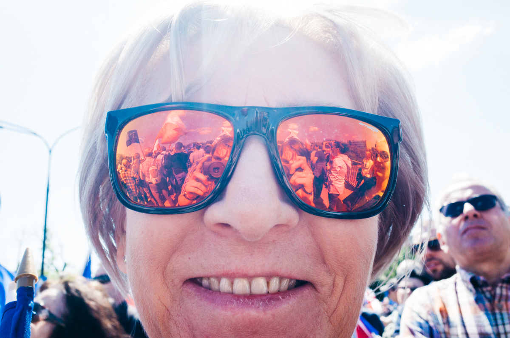
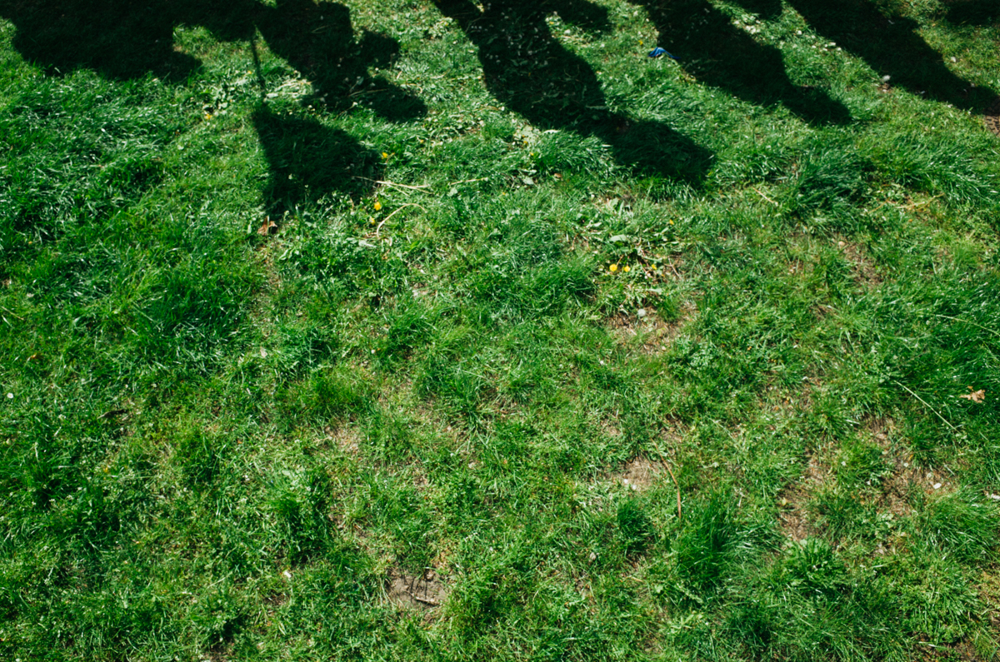
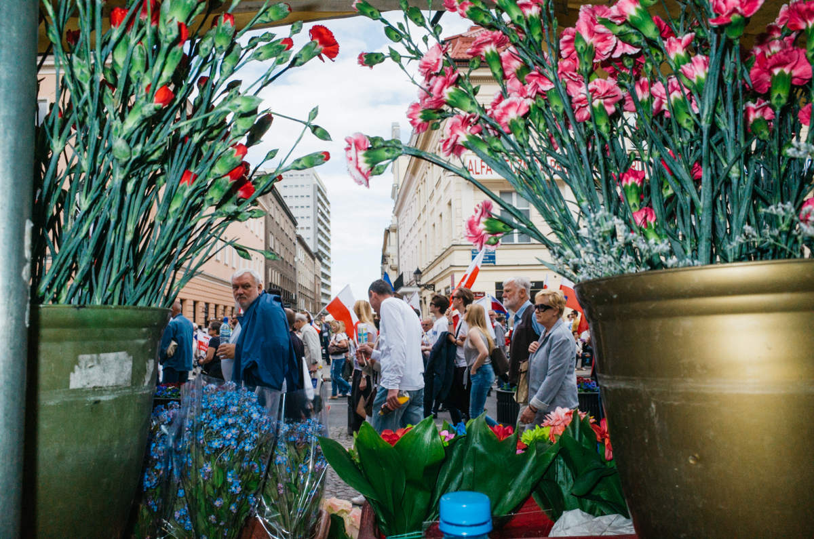
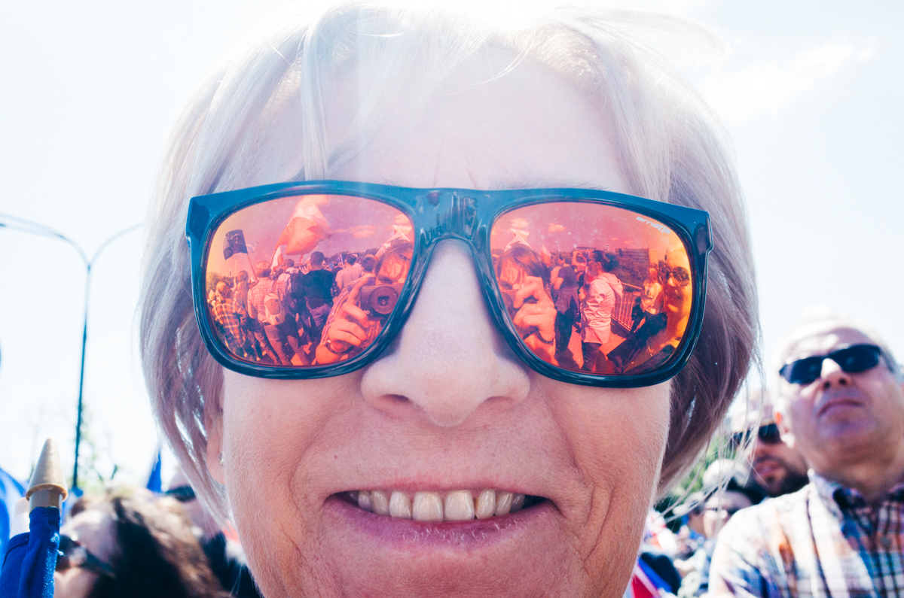
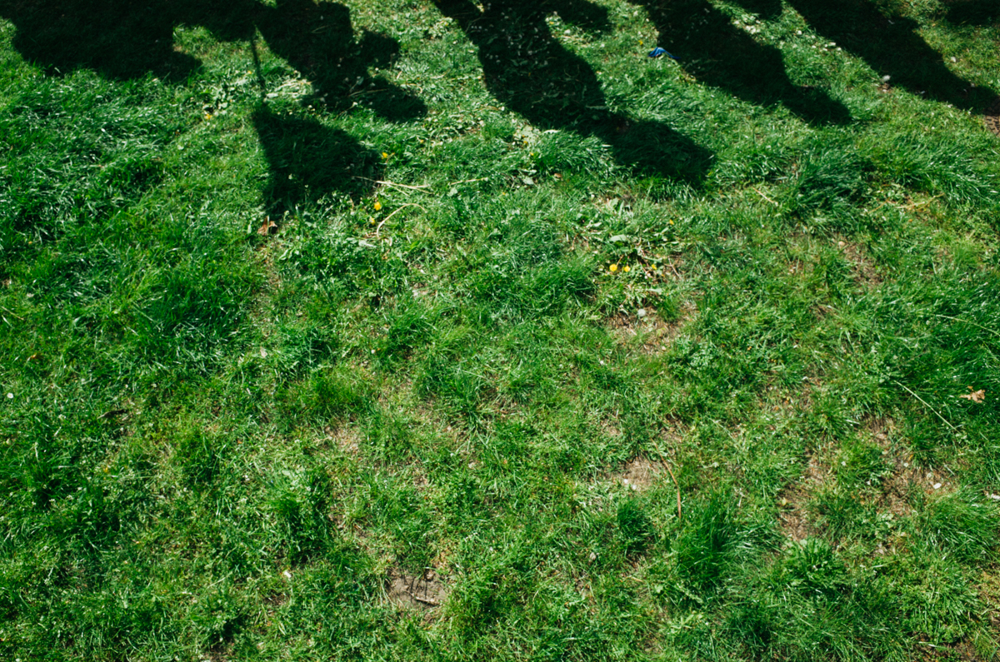
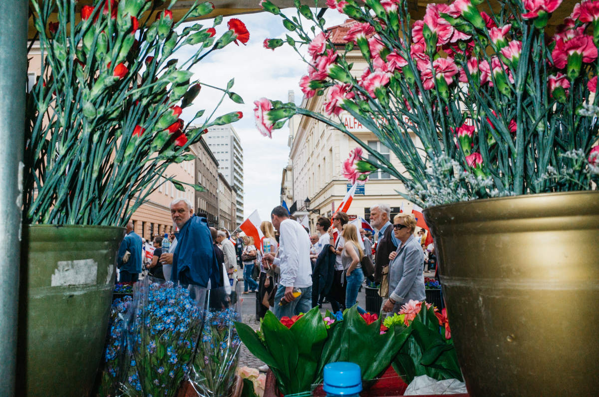


 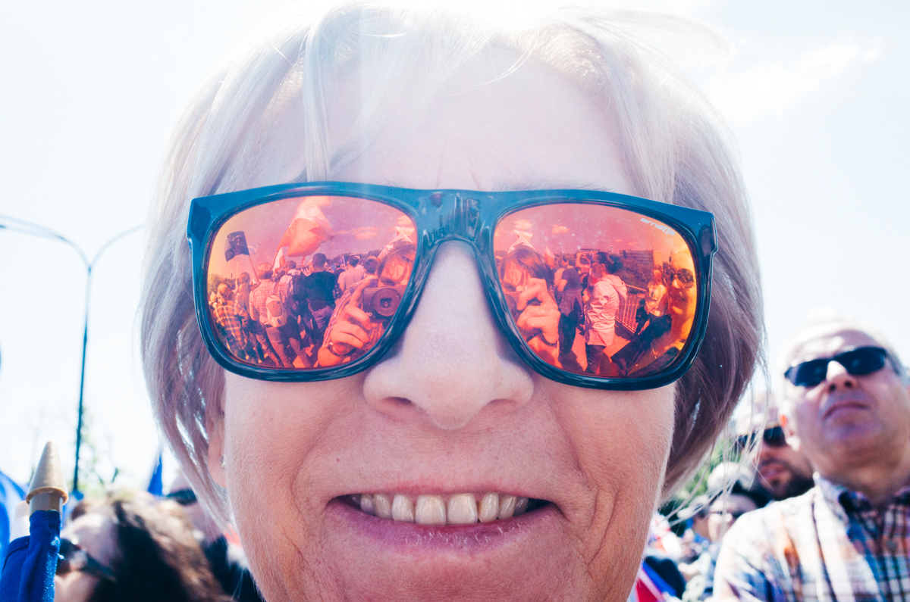
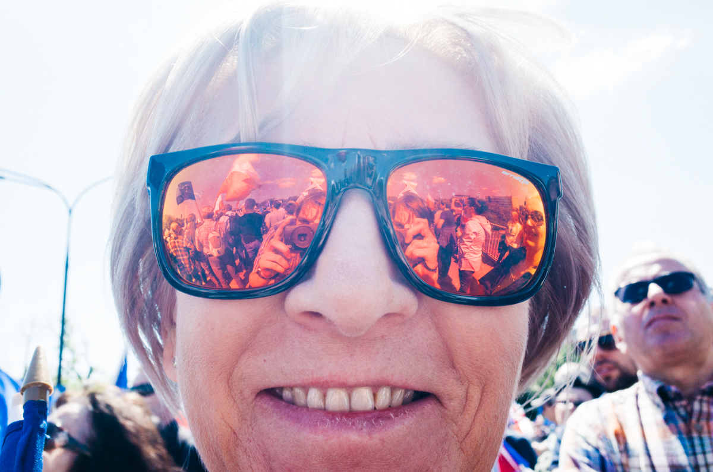

 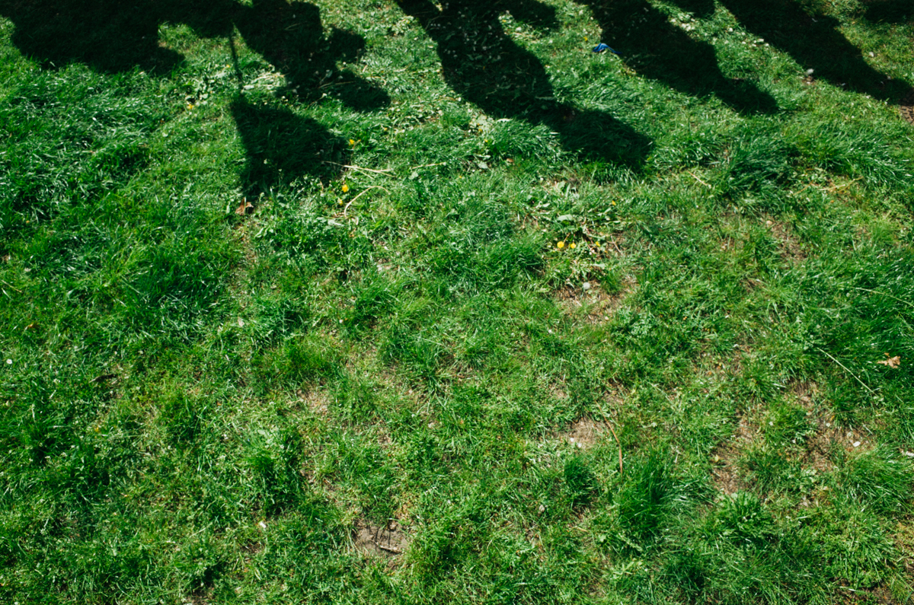
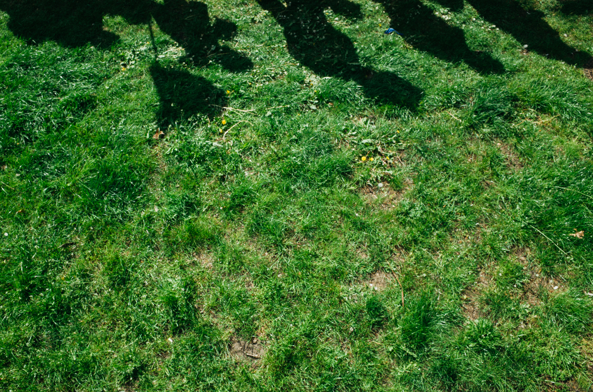

 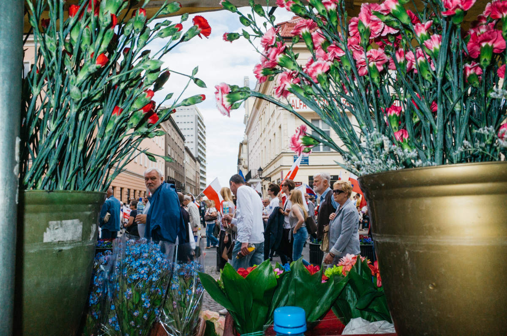
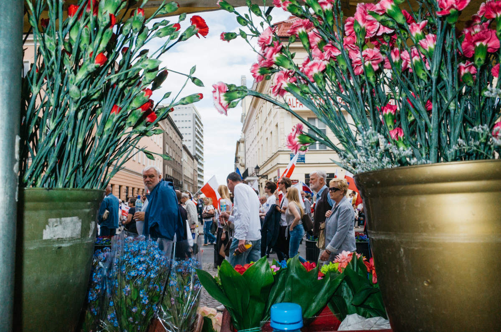


2015 ellections in Poland was great succes of Law and Justice party - conservative and socialist party, rulled by Jarosław Kaczyński. We did'nt have to wait long for the moment, when neo-liberal communities around Poland started organising anti-government protests.
I decided to photograph one of this protests, propably one of the biggest, which took place in Warsaw on may 2015.